Fr ↵
Accueil
Bienvenue sur la documentation Episciences.
Vous trouverez sur ce site une aide contextuelle pour vous accompagner dans l’utilisation de la plateforme, suivant votre rôle dans la revue.
Vous pouvez naviguer dans les pages ou utiliser le moteur de recherche pour trouver l’aide correspondant à votre rôle (auteur, rédacteur, administrateur).
Compte et profil
Tip
Si vous avez déjà un compte sur HAL, vous n’avez pas besoin de vous créer un compte spécifique pour accéder à Episciences. Il vous suffit de renseigner vos login/mot de passe de votre compte HAL.
Créer un compte
La création d’un compte se fait en deux étapes :
- renseigner les informations nécessaires à la création du compte dans le formulaire dédié sur le site de la revue ;
- valider la création du compte en cliquant sur le lien d’activation reçu par mail.
Sur le site de la revue, cliquer sur “+ Créer un compte” en haut à droite.
Les champs marqués d’un astérisque sont obligatoires.

Saisir les informations :
- login* : il s’agit de votre nom d’utilisateur. Il doit comporter au minimum 3 caractères et ne pourra pas être modifié par la suite ;
- mot de passe* : il doit comporter au minimum 7 caractères ;
- mot de passe (confirmation)* : confirmer le mot de passe ;
- nom de famille* : avec une majuscule à l’initiale (ex : Dupont) ;
- prénom* : avec une majuscule à l’initiale (ex : Camille) ;
- nom à afficher : par défaut, vos prénom et nom seront affichés ;
- ORCID : si vous en avez déjà un, saisissez ici votre identifiant à 16 chiffres ;
- affiliation(s) : nom ou acronyme de votre/vos structures (une seule par ligne : utilisez le bouton + pour ajouter des lignes supplémentaires) ;
- langue par défaut : choisir anglais ou français comme langue à afficher dans l’interface ;
- courriel* : indiquer ici une adresse valide sur laquelle sera envoyée le lien de validation.
Cocher la case “Je suis un humain” afin de pouvoir valider les informations.
Pour finaliser l’étape de création de compte, valider celle-ci en activant le lien reçu par mail. À noter que le mail d’activation de compte n’est pas envoyé immédiatement (sa réception peut prendre un peu de temps). Pensez à vérifier que le mail n’est pas arrivé dans les spams.
Une fois le compte créé, vous pouvez vous connecter au site.
Modifier son profil
Pour modifier son profil, se connecter puis cliquer sur “Modifier mon profil” en haut à droite.
 Les informations suivantes peuvent être ajoutées à votre compte après sa création :
Les informations suivantes peuvent être ajoutées à votre compte après sa création :
- civilité : Mme, M., Dr, Pr, etc. ;
- complément de nom ;
- photo : au format .jpg, .gif ou .png).
Vous pouvez également ajouter votre ORCID, renseigner vos affiliations et modifier la langue par défaut de l’interface.
Modifier son mot de passe
Pour modifier son mot de passe, se connecter puis cliquer sur “Modifier mon mot de passe” en haut à droite. Il est nécessaire d’indiquer son mot de passe actuel pour pouvoir le modifier.
Le nouveau mot de passe doit comporter 7 caractères minimum.
Login ou mot de passe oublié
En cas d’oubli de votre mot de passe ou de votre login, cliquez sur “Mot de passe oublié ?” ou “Login oublié ?” en haut à droite du bouton “Connexion”.
- Si vous avez oublié votre mot de passe, saisissez votre login puis cliquer sur “Demander un nouveau mot de passe”. Vous recevrez un courriel contenant un lien vers une page où vous pourrez vous créer un nouveau mot de passe.
- Si vous avez oublié votre login (nom d’utilisateur), saisissez l’adresse mail associée à votre compte. Vous recevrez un courriel contenant votre nom d’utilisateur.
À noter que les mails ne sont pas envoyés immédiatement (leur réception peut prendre un peu de temps). Pensez également à vérifier s’il ne sont pas arrivés dans les spams.
Gestion des références bibliographiques
Rôles : administrateur, auteur, rédacteur en chef, secrétaire de rédaction
L’application “Episciences Citations”
Episciences est dotée d’une application d’extraction des références bibliographiques, “Episciences Citations”.
Qu’est-ce que “Episciences Citations” ?
L’application permet d’extraire automatiquement et de gérer manuellement les références bibliographiques contenues dans les documents acceptés pour publication. Une fois validées, ces références sont affichées sur les pages publiques des documents/articles. Elles sont également ajoutées aux exports pour CrossRef et ZbMath Open.
Fonctionnement
L’application extrait les références bibliographiques du PDF du document via l’outil Grobid (GeneRation Of BIbliographic Data).
Affichage
Voici un exemple d’affichage des références extraites d’un article (source : Stéphane André et Camille Noûs, “Solving viscoelastic problems with a Laplace transform approach supplanted by ARX models, suggesting a way to upgrade Finite Element or spectral codes”, Journal of Theoretical, Computational and Applied Mechanics, publié le 10 octobre 2023, https://doi.org/10.46298/jtcam.10304).
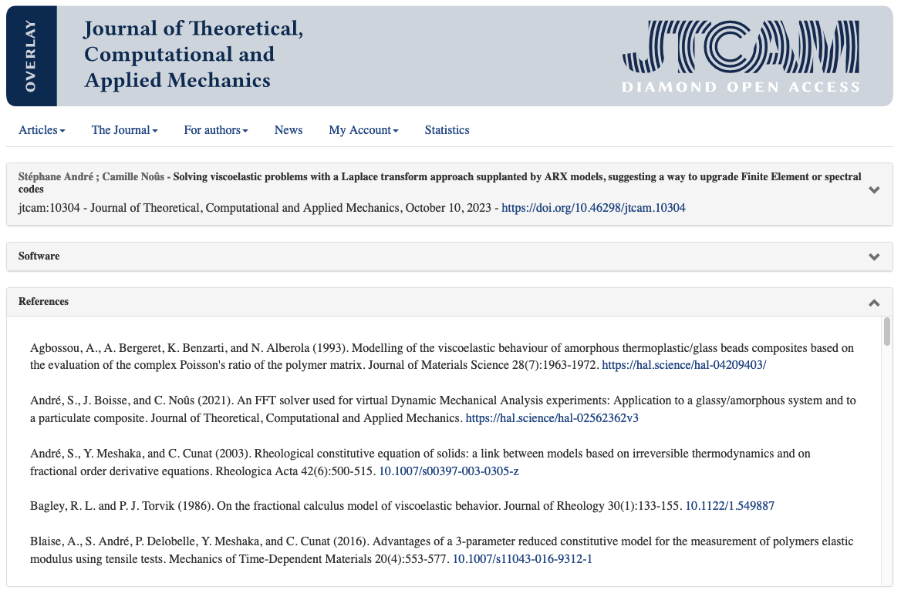
Gérer les références
Seules les personnes ayant les droits de gérer les documents (rôles : administrateur, auteur, rédacteur, rédacteur en chef, secrétaire de rédaction) ont accès à cette fonctionnalité.
La modification manuelle des références extraites est accessible au niveau des documents ayant le statut “accepté et prêt à publier” ou “publié”.
Pour vérifier et modifier les références, se rendre sur la page de gestion d’un article.
Dans l’onglet “Références bibliographiques”, cliquer sur “Gérer”.

L’application “Episciences Citations” s’ouvre dans un nouvel onglet. Par défaut, l’interface est en anglais : cliquer en haut à droite sur “fr” pour afficher celle-ci en français.
L’interface présente deux parties distinctes :
- à gauche, le PDF en mode prévisualisation ;
- à droite, les références identifiées et extraites automatiquement via Grobid.
Plusieurs actions sont possibles :
- Accepter toutes les références
- Refuser toutes les références
- Modifier une référence
- Ajouter une référence
- Ordonner les références
- Extraire à nouveau les références
- Importer un fichier BibTeX
Voyons en détail chacune des actions proposées.
Accepter toutes les références
Cliquez sur le bouton “Accepter toutes les références”. Les coches à droite de chaque référence passent au vert. Cliquez sur “Enregistrer”.
Refuser toutes les références
Cliquez sur le bouton “Refuser toutes les références”. Les coches à droite de chaque référence se grisent. Cliquez sur “Enregistrer”.
Modifier une référence
Pour modifier une référence, cliquez sur le bouton “Modifier” en regard de la référence.
Le champ de la référence est désormais éditable ce qui permet de modifier les informations. Un champ dédié permet d’ajouter le DOI du document ou encore une URL.
Cliquez sur “Confirmer” pour valider les corrections.
La référence modifiée apparaît désormais en noir et la coche passe au vert pour confirmer la modification.
Vous pouvez modifier à nouveau la référence en cliquant sur “Modifier”, autant de fois que nécessaire.
Cliquez ensuite sur “Enregistrer” pour sauvegarder les modifications.
Ajouter une référence
Il peut arriver que l’extraction automatique manque une référence ou bien fusionne plusieurs références en une (cas ci-dessous).
Dans ce cas, l’option “Ajouter une référence” permet de dissocier les références fusionnées.
Cliquez sur le bouton “Ajouter une référence”. Une fenêtre s’ouvre avec deux champs à compléter : “Référence” et “DOI, URL”. Note : pour que l’URL soit cliquable, il faut qu'elle commence impérativement par http ou https.

Une fois les champs de la référence renseignés, cliquez sur “Ajouter une référence”. La nouvelle référence est ajoutée en fin de liste et automatiquement validée. La mention “UTILISATEUR” sur fond vert apparaît sur le côté droit de la référence ce qui permet de la distinguer des références extraites du PDF.
Ordonner les références
Pour déplacer une référence acceptée, cliquez dans le bloc de celle-ci et maintenez-le appuyé en le glissant vers le haut ou le bas. Relâchez le bloc à l’endroit souhaité puis cliquez sur “Enregistrer”.
Valider les références
Pour valider votre travail sur les références et retourner à la page de gestion du document, cliquez sur “Enregistrer” puis fermez l’onglet “Episciences Citations”.
Pour faire apparaître les références sur la page de gestion du document, vous devez rafraîchir la page.
Les références validées sont précédées d’une coche verte. Cela signifie que seules ces références apparaissent sur la page publique du document.
Les liens (DOI, URL) qui ont été ajoutés dans le champ dédié sont cliquables.
Importer un fichier BibTeX
Sur la page du document, dans l’onglet “Références bibliographiques”, cliquer sur “Import BibTeX”.

L’application “Episciences Citations” s’ouvre dans un nouvel onglet. Cliquer sur le bouton “Import BibTeX” en haut à droite : une fenêtre s’ouvre permettant de charger un fichier .bibtex

Visualiser les références
Les références sont désormais visibles dans l’onglet “Références bibliographiques” sur la page publique du document.
Préparation de copie
Rôles : auteur, préparateur de copie
La préparation de copie (ou copy editing) est une étape qui intervient après l’acceptation de l’article.
Cette étape permet de confier la mise en forme finale soit :
- à une personne avec un rôle dédié (préparateur de copie) ;
- à l’auteur.
La préparation de copie peut également être faite par les rôles suivants :
- administrateur
- rédacteur en chef
- secrétaire de rédaction
- rédacteur (pour ses articles assignés)
Le rôle de préparateur de copie
Le rôle de préparateur de copie peut être attribué à une ou plusieurs personnes. Pour ajouter ce rôle à un ou plusieurs utilisateurs, aller dans : Gérer la revue > Utilisateurs > Liste.
La personne disposant du rôle de préparateur de copie doit ensuite être ajoutée aux articles sur lesquels elle doit intervenir.
Activité du préparateur de copie
Le premier choix à faire sur un article accepté est de sélectionner le type de flux de travail souhaité :
- Option 1 : la revue se charge de la mise en forme. L’auteur fournit les sources au préparateur de copie qui s’occupera de la mise en forme de la version finale ;
- Option 2 : l’auteur met lui-même en forme la version finale.

Option 1 : la revue prend en charge la préparation de copie
Choisir l’option “Demander à l’auteur ses sources (À mettre en forme par la revue)”.
Une fenêtre permet de personnaliser le message à envoyer à l’auteur pour lui demander de déposer ses sources sur le site de la revue.
Dès que l’auteur a déposé ses sources, un mail est envoyé au préparateur de copie lui permettant de récupérer les fichiers sur le site. Si les fichiers ne conviennent pas, il est possible de demander d’autres sources à l’auteur. Pour cela, dans “Statut de l’article”, sélectionner “Redemander à l’auteur ses sources (À mettre en forme par la revue)”.
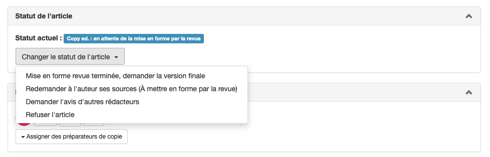
Si tout est correct, télécharger les fichiers, procéder à la mise en forme et valider en sélectionnant “Mise en forme revue terminée, demander la version finale”. Ceci permet d’envoyer un message à l’auteur.
Le message contient un lien permettant à l’auteur de soumettre, après dépôt dans l’archive ouverte, la version finale de son manuscrit qui sera alors publié par la revue.
Le travail de préparation de copie est alors terminé.
Ajout des sources par l’auteur
Pour téléverser les fichiers sources, cliquer sur le bouton “Ajouter les fichiers sources”.

Il est possible de modifier le message prédéfini.
Une fois le(s) fichier(s) sélectionné(s), cliquer sur “Envoyer” pour les transmettre. Un récapitulatif du mail et des fichiers envoyés s’affiche alors.
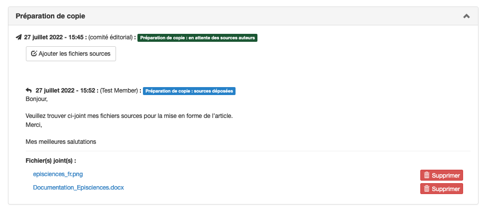
Si besoin, d’autres envois ultérieurs sont possibles avec d’autres fichiers. À chaque fois, une notification est envoyée au préparateur de copie.
Option 2 : l’auteur prend en charge la préparation de copie
Choisir l’option “Demander la version finale (À mettre en forme par l’auteur)”.
Une fenêtre permet de personnaliser le message à envoyer à l’auteur. Le message est pré-rempli selon un template personnalisable par la revue qui permet d’ajouter automatiquement les informations dont l’auteur a besoin, ainsi que des éléments permettant de styler le manuscrit pour sa version finale.
Les informations présentes dans le message doivent permettre à l’auteur d’avoir accès à toutes les données nécessaires pour mettre en forme son article.
Important L’administrateur du site doit avoir créé au préalable une archive .zip (nommé selon le format : titre_court_de_la_revue_episciences.zip) dans le répertoire “Ressources” (Gérer la revue > Site web > Ressources). Cette archive contient les fichiers à utiliser pour la mise en forme, par exemple les différents éléments graphiques, la feuille de style etc.
C’est ensuite à l’auteur de téléverser ses sources.
Téléversement par l’auteur de sa version formatée
L’auteur téléverse sa version formatée sur le site.

Une fois le fichier sélectionné, cliquer sur “Envoyer” pour le transmettre. Un récapitulatif du mail et du fichier envoyé s’affiche.
Si besoin, d’autres envois ultérieurs sont possibles avec d’autres fichiers. À chaque fois, une notification est envoyée au préparateur de copie.
Le préparateur de copie reçoit une notification par email quand l’auteur a déposé sa version formatée. Il est ensuite possible de passer à l’étape d’acceptation de la version auteur ou à la demande d’une autre version formatée.
Acceptation
Si la version déposée ne convient pas, le préparateur de copie peut contacter l’auteur pour lui demander des modifications.
Si la version convient, accepter la version de l’auteur : dans “Statut de l’article”, sélectionner “Accepter comme version finale”.
L’acceptation permet d’envoyer un message à l’auteur pour qu’il dépose cette version validée sur l’archive ouverte.
Le message contient également un lien permettant à l’auteur de soumettre, après dépôt dans l’archive ouverte, la version finale de son manuscrit qui sera alors publié par la revue.
Le travail de préparation de copie est alors terminé.
FAQ
Comment sont numérotées les versions d’un document ?
Il existe deux types de numérotation de versions de documents : 1) versions de l’archive ; 2) versions intermédiaires dans Episciences.
1. Versions de l’archive ouverte
Les numéros de version d’un document correspondent aux versions proposées par l’auteur : elles suivent le schéma de numérotation de l’archive ouverte source.
Exemple :
- Version 5
- Version 2
La première version soumise à la revue a été la version 2 (V2). Puis, suite à des demandes de modifications, la version mise à jour proposée par l’auteur est la version 5 (V5) de l’archive source. Une version 4 existe sur l’archive ouverte mais n’a pas été proposée par l’auteur sur le site de la revue. On passe donc directement de la V2 à la V5.
2. Versions intermédiaires dans Episciences
Les versions intermédiaires (documents mis à jour sur le site de la revue mais ne provenant pas d’une archive) sont numérotées avec des points.
Exemple :
- Version 2
- version 1.02
- version 1.01
- Version 1
Les versions 1.01 et 1.02 sont des versions de travail, dérivées de la version 1, qui ne proviennent pas d’une archive ouverte : elles ont été téléversées directement sur le site de la revue par l’auteur.
3. Omettre le tampon arXiv
arXiv propose une fonctionnalité pour omettre le tampon arXiv, par exemple s'il crée un problème de mise en page pour les versions publiées des revues.
Si vous souhaitez supprimer le tampon arXiv, vous pouvez le faire en ajoutant un fichier 00README.XXX avec le contenu 'nostamp'
Grille de relecture
Rôles : administrateur, rédacteur en chef, secrétaire de rédaction
Une grille de relecture peut être élaborée pour guider les relecteurs grâce à une série de points prédéfinis à examiner. Les résultats des relectures peuvent ainsi être normalisés.
Pour construire une grille de lecture, aller dans : Gérer la revue > Revue > Grille de relecture.
Une grille de relecture est composée d’un nom et d’une série de critères.
Grille par défaut

Une grille de relecture est proposée par défaut. D’autres grilles peuvent être ajoutées, en fonction des besoins, par exemple pour faire une distinction entre volumes courants et volumes d’actes de conférence.
La grille par défaut est modifiable. Chaque critère peut être modifié ou supprimé.
Ajouter un critère
Une grille de relecture est composée d’autant de critères que nécessaire. Pour définir un critère, cliquer sur “Ajouter un critère”. 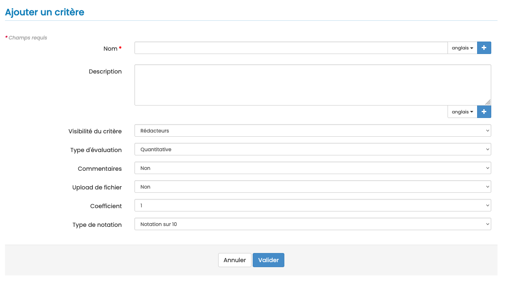
Les champs marqués d’un astérisque sont obligatoires :
- Nom* : si le site de la revue est en plusieurs langues, le nom doit être saisi pour chacune des langues. Cliquer sur + pour afficher un champ supplémentaire.
- Description : à utiliser pour définir les critères proposés aux relecteurs. Si le site de la revue est en plusieurs langues, la description doit être saisie pour chacune des langues. Cliquer sur + pour afficher un champ supplémentaire.
- Visibilité du critère : sélectionner Publique/Contributeur/Rédacteurs. Par défaut, le critère n’est visible que des rédacteurs.
- Type d’évaluation : l’évaluation peut être quantitative, qualitative ou libre. Si “Qualitative” ou “Libre” est sélectionné, il conviendra de sélectionner “oui” dans le champ “Commentaires” ou dans “Upload de fichier”.
- Commentaires : oui/non. Si le choix est “oui”, le relecteur peut ajouter un commentaire sur ce critère.
- Upload de fichier : oui/non. Si le choix est “oui”, le relecteur peut télécharger le texte original annoté.
- Coefficient : un coefficient peut être attribué au critère. Le chiffre le plus élevé correspond au niveau de pondération le plus haut. La somme des coefficients des différents critères déterminera une note finale.
- Type de notation :
- quand le type d’évaluation sélectionné est “Quantitatif”, trois types de notation sont proposés (notation sur 10, sur 5 ou personnalisée)
- quand le type d’évaluation sélectionné est “Qualitatif”, il est possible de choisir entre une “notation classique (oui, non, peut-être)” ou une “notation personnalisée”. Pour cette dernière, différentes valeurs peuvent être ajoutées, par exemple : mauvais, moyen, bon, excellent.
Une fois les champs complétés, cliquer sur “Valider” pour enregistrer le critère.
Ajouter un séparateur
Pour organiser les critères de la grille, il est possible d’ajouter un ou plusieurs séparateurs. Les séparateurs permettent de structurer la grille en différentes parties, par exemple : “Qualité”, “Intérêt du sujet”, etc. Pour créer un séparateur, cliquer sur “Ajouter un séparateur”.
Les champs marqués d’un astérisque sont obligatoires :
- Nom* : si le site de la revue est en plusieurs langues, le nom doit être saisi pour chacune des langues. Cliquer sur + pour afficher un champ supplémentaire.
- Description : à utiliser pour définir les critères proposés aux relecteurs. Si le site de la revue est en plusieurs langues, la description doit être saisie pour chacune des langues. Cliquer sur + pour afficher un champ supplémentaire.
- Visibilité du critère : sélectionner Publique/Contributeur/Rédacteurs. Par défaut, le critère n’est visible que des rédacteurs.
Une fois les champs complétés, cliquer sur “Valider” pour enregistrer le séparateur.
Visualiser la grille
En cliquant sur “Visualiser la grille”, la grille telle qu’elle sera proposée aux relecteurs s’affiche.

Une icône de couleur précise la visibilité du critère :
- rouge : la réponse à ce critère peut être visible publiquement sur la page de l’article
- orange : la réponse à ce critère peut être vue par l’auteur
- gris : la réponse à ce critère ne peut être vue que par les rédacteurs
Module de mail
Rôles : administrateur, rédacteur, rédacteur en chef, secrétaire de rédaction, webmaster
Mailing
Pour gérer l’envoi de mails à certains rôles, aller dans : Gérer la revue > Mails > Mailing.
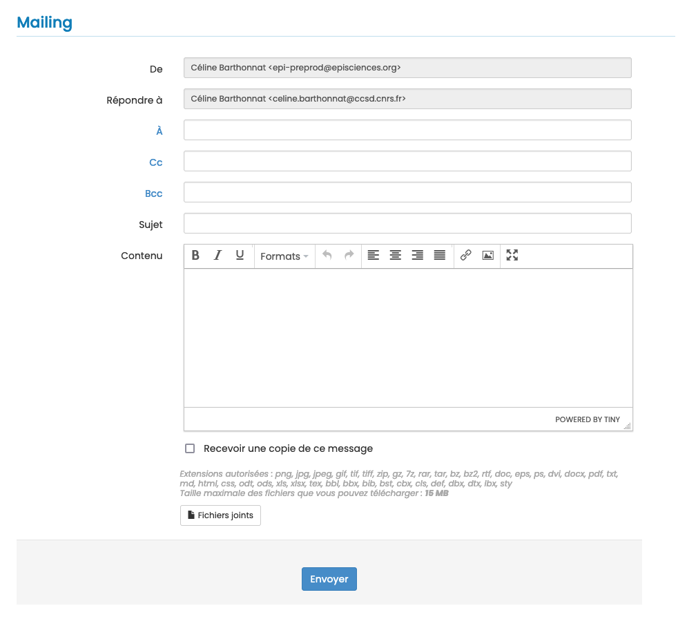
Un message peut être envoyé à un destinataire particulier ou à un groupe de destinataires sélectionnés en fonction de leur rôle dans la revue. Les rôles sélectionnables sont : rédacteurs en chef, rédacteurs invités, rédacteurs, secrétaire de rédaction, webmasters, relecteurs.
Pour choisir le ou des destinataires, cliquer sur “À”, “Cc” ou “Bcc” puis sur “Tous les contacts”.

Templates
Un certain nombre de mails pré-paramétrés (templates) sont disponibles dans le site.
Pour consulter et modifier ces templates, aller dans : Gérer la revue > Mails > Templates.
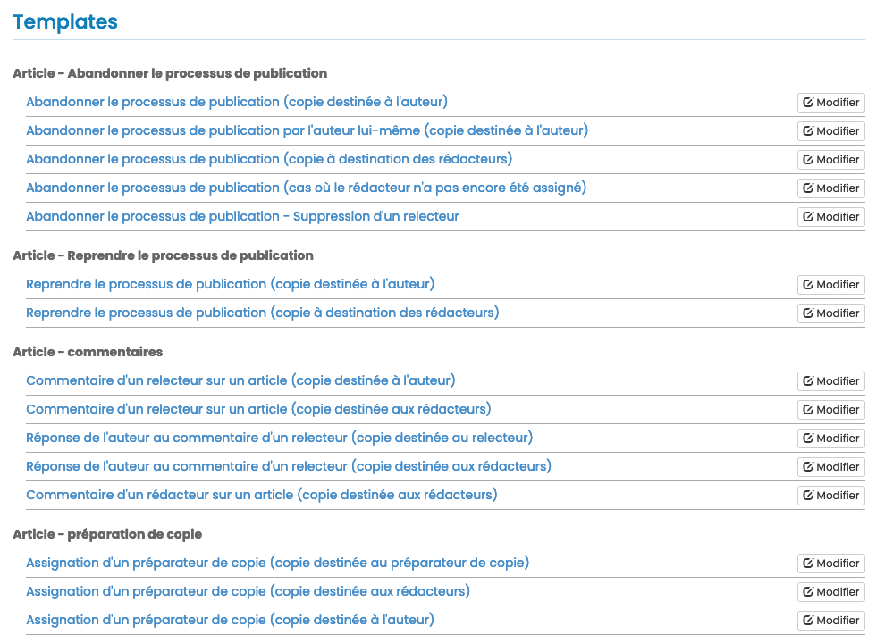
Pour modifier un template, cliquer sur le bouton “Modifier”.
Le nom du template, son sujet et son contenu peuvent être personnalisés.

Pour personnaliser les modèles, consulter la liste des variables à insérer dans les templates.
Historique des échanges
Tous les messages envoyés via le site (notifications automatiques comme mails), sont accessibles via l’historique disponible dans Gérer la revue > Mails > Historique.
Par défaut, les échanges sont affichés par date d’envoi, les échanges les plus récents s’affichant en premier.

Relances automatiques
Rôles : administrateur, rédacteur, rédacteur en chef, secrétaire de rédaction
Pour créer et paramétrer les relances, aller dans : Gérer la revue > Mails > Relances automatiques.
Le lancement des relances automatiques fonctionne à partir : + Des délais paramétrés pour la revue (voir Gérer la revue > Paramètres > Paramètres notification) ; + Des paramétrages des rappels.
Trois types de relance sont proposés : 1. Invitation de relecteur sans réponse : permet de relancer un relecteur qui n’a pas répondu à une invitation. 2. Rappel avant date de livraison de relecture : permet de rappeler la date limite à un relecteur qui a accepté l’invitation. 3. Rappel après date de livraison de relecture : permet de relancer un relecteur ayant accepté l’invitation mais qui a dépassé le délai.
Pour paramétrer, cliquer sur “Créer une relance automatique”. Un écran s’affiche avec une liste de paramètres à définir pour les types de relances souhaitées.

Les champs marqués d’un astérisque sont obligatoires.
- Type : sélectionner le type de relance dans la liste déroulante. Au choix :
- Invitation de relecteur sans réponse
- Rappel avant date de livraison de relecture
- Relance après date de livraison de relecture
- Rappel avant date limite de modification
- Relance après date limite de modification
- Pas assez de relecteurs
- Article bloqué à l’état accepté
- Destinataire : sélectionner le rôle concerné dans la liste déroulante. Au choix :
- Rédacteur en chef
- Rédacteur
- Relecteur
- Auteur
- Délai* : saisir un nombre correspondant au nombre de jours (la relance sera envoyée X jours après l’expiration du délai paramétré dans la revue).
- Répétition : sélectionner la fréquence des relances dans la liste déroulante. Au choix :
- Jamais
- Quotidienne
- Hebdomadaire
- Toutes les deux semaines
- Mensuelles
- Personnalisation : sélectionner “Template par défaut” (non modifiable) ou “Template personnalisé” afin de pouvoir modifier le sujet du mail et le texte du message.
Cliquer sur “Valider” pour enregistrer vos modifications. Une relance automatique est créée. Il est possible de la modifier.

Les envois de rappels automatiques sont effectués tous les jours à 00:00.
Les messages sont consultables dans l’historique des mails : Gérer la revue > Mails > Historique.
Relire un article
Rôle : relecteur
Invitation à la relecture d’un article
Le relecteur reçoit une invitation par mail. Le message contient le titre de l’article, un lien vers l’article dans l’archive ouverte et un lien vers le formulaire de réponse permettant d’accepter ou de refuser l’évaluation de l’article.
L’invitation a une durée limitée : le délai de réponse est précisé dans le mail.
En cliquant sur le lien, le formulaire de réponse à l’invitation s’affiche :
Cliquer sur la réponse souhaitée.
Refuser l’invitation
Pour décliner l’invitation, cliquer sur “Je refuse de relire cet article”.
Il est alors possible de suggérer le nom d’un autre relecteur ainsi que de préciser les raisons du refus.

Dans certains cas, la revue peut demander de déclarer si le relecteur a des intérêts en concurrence avec l’article en cours de révision. Si tel est le cas, cela est considéré comme un motif de refus.
Cliquer sur “Confirmer mon refus” pour enregistrer la réponse.
Un bouton “J’ai changé d’avis !” permet de revenir au formulaire de réponse à l’invitation.
Accepter l’invitation
Après avoir cliqué sur “J’accepte de relire cet article”, un mail est envoyé au relecteur lui permettant d’accéder à l’évaluation de l’article sur le site.
Connexion
Se connecter avec son login et mot de passe sur le site de la revue.
Note : il n’est pas nécessaire de créer plusieurs comptes sur Episciences si le relecteur est sollicité par plusieurs revues hébergées sur la plateforme.
Tableau de bord
Le tableau de bord affiche les actions en cours sur le site : les relectures mais également les articles si l’utilisateur en a soumis.
Cliquer sur “Relire les articles” pour accéder aux articles.
La page “Mes relectures” liste les articles pour lesquels l’utilisateur a reçu une invitation.
Chaque article a un statut : les relectures en attente apparaissent en haut du tableau.
L’utilisateur peut filtrer par statut de l’article, état de relecture, volume, rubrique, rédacteurs et DOI.
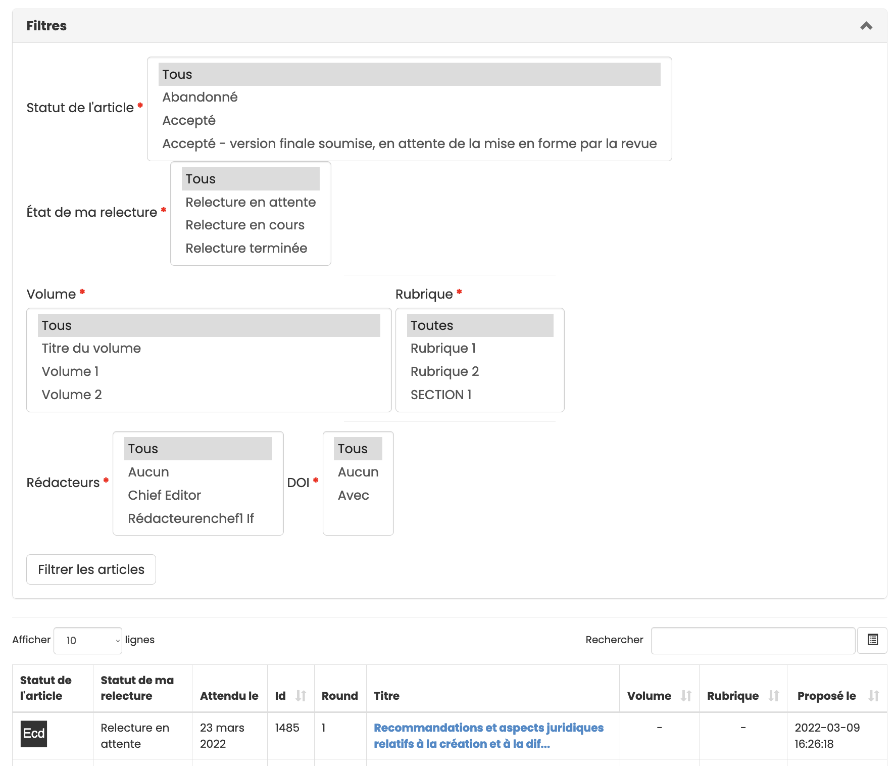
Processus
En cliquant sur le titre de l’article, une nouvelle page s’ouvre permettant d’accéder à l’article à relire et au formulaire à renseigner pour l’évaluation.
Deux moyens sont proposés pour accéder à l’article : 1. Télécharger le fichier ; 2. Visiter la page de l’article : permet de consulter et de télécharger l’article sur le site de l’archive ouverte où il a été déposé. Il peut y avoir plusieurs versions du texte, ainsi que des documents annexes (jeu de données, fichier vidéo, diaporama, etc.).
Renseignement de la grille d’évaluation
Chaque revue a sa propre grille d’évaluation dont les différents critères consistent en des notes ou des items à sélectionner dans un menu déroulant.
En fonction des revues, le relecteur peut compléter l’évaluation par un commentaire et télécharger un fichier à destination de l’auteur : ce fichier peut être l’article annoté, ou toute information que le relecteur juge utile de communiquer à l'auteur.
Les échanges entre le relecteur et l’auteur sont sauvegardés sur la plateforme. Par défaut, le relecteur est anonyme. S’il le souhaite, il peut lever l’anonymat en ajoutant son nom dans l’espace “Commentaire”.

Validation de l’évaluation
Lors de l’évaluation, deux options sont possibles : 1. Enregistrer l’évaluation : permet de sauvegarder les informations saisies au cours de la relecture si celle-ci n’est pas terminée. 2. Terminer l’évaluation : permet de valider les informations saisies et de les transmettre au rédacteur en charge de l’article.
Rôles
Il existe quatorze rôles dans Episciences, neuf ayant des droits associés à des fonctionnalités.
Les rôles associés au profil s’affichent en haut à droite lorsque l’on passe la souris sur son nom d’utilisateur et dans le Tableau de bord, dans la partie “Mon compte”.
À noter : la sémantique des rôles dans Episciences n’est pas forcément adaptée à l’organisation de chaque revue. Ainsi, un utilisateur peut avoir plusieurs rôles dans une revue, à attribuer en fonction des fonctionnalités qu’il a à utiliser.
Les rôles ayant le plus de droits sont mentionnés par un astérisque.
- Auteur : peut soumettre un article.
- Administrateur* : possède tous les droits sur la revue dont le paramétrage du site.
- Préparateur de copie : gère le processus de préparation de copie (copy editing), seul ou en relation avec l’auteur, pour aboutir à une version finale qui sera publiée dans la revue.
- Rédacteur : peut affecter un article à une rubrique ou à un volume, assigner des relecteurs, faire des suggestions (accepter ou refuser un article). Ses droits dépendent du paramétrage de la revue.
- Rédacteur en chef* : possède tous les droits sur la revue. Il gère les utilisateurs et leur attribue des rôles. Il gère les relecteurs et les articles. Il peut aussi configurer ou modifier le site web de la revue.
- Rédacteur invité : a les mêmes droits que le rédacteur mais seulement sur une rubrique ou un volume.
- Relecteur : permet de relire l’article pour lequel il a été sollicité et de renseigner une évaluation. En fonction du paramétrage de la revue, ce rôle permet de communiquer avec l’auteur.
- Secrétaire de rédaction* : fait un premier tri dans les articles soumis. Il peut refuser un article (s’il ne correspond pas à la ligne éditoriale de la revue par exemple). Il peut gérer les utilisateurs (création de compte).
- Webmaster : responsable du site web de la revue. Cela inclut le paramétrage (configuration générale du site) et l’accès à la feuille de styles.
Il existe également cinq rôles sans droits associés. Ils peuvent se combiner aux autres rôles et sont utilisés pour afficher les fonctions dans la revue sur les pages dédiées.
- Membre : rôle par défaut attribué à toute personne se créant un compte sur le site d’une revue.
- Ancien membre : pour signaler une personne qui a été active dans la revue mais ne l’est plus actuellement.
- Comité scientifique : membre actuel du comité scientifique de la revue.
- Comité technique : membre actuel du comité technique de la revue.
- Comité éditorial : membre actuel du comité éditorial de la revue.
Les fonctionnalités liées à chaque rôle sont mentionnées de façon synthétique dans un tableau, accessible en mode connecté : Mon espace > Permissions

Rubriques
Rôles : administrateur, rédacteur en chef, secrétaire de rédaction
Pour créer et gérer les rubriques, aller dans Gérer la revue > Revue > Rubriques.

Plusieurs rubriques peuvent être ouvertes en même temps. Un auteur peut soumettre un article dans n’importe quelle rubrique.
Pendant le processus de relecture, un article peut être affecté à une autre rubrique par le rédacteur en chef (impossible après publication).
Un article ne peut être soumis à une rubrique de statut “fermé”.
Le nombre de rubriques n’est pas limité.
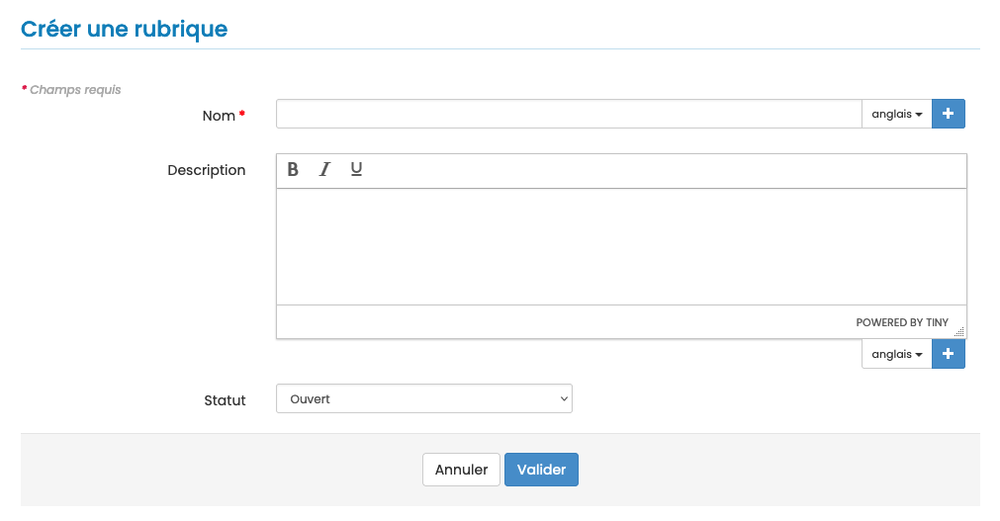
Les métadonnées d’une rubrique :
- Nom : champ obligatoire
- Description : ne sera pas affichée sur le site
- Statut : ouvert/fermé
Si le site de la revue est en plusieurs langues, le nom de la rubrique doit être saisi pour chacune des langues. Cliquer sur + pour afficher le champ.
Paramètres de la revue
Rôle : administrateur
Pour paramétrer la revue, aller dans : Gérer la revue > Revue > Paramètres.
Les champs marqués d’un astérisque sont obligatoires.
Paramètres généraux (affichés dans le pied de page)
- ISSN (online) : compléter avec l’e-ISSN de la revue au format XXXX-XXXX
- ISSN (print) : compléter avec l’ISSN de la revue au format XXXX-XXXX
- DOI : à renseigner si la revue possède un DOI
- Page de contact de la revue : indiquer ici une URL
- Page de contact du support technique : indiquer ici une URL
- Courriel de contact de la revue : indiquer ici une adresse de courriel
- Courriel de contact du support technique : adresse mail du support renseignée par l’équipe Episciences
Paramètres de soumission
Archives disponibles* : sélectionner la ou les archives disponibles pour la soumission d’article. Pour en choisir plusieurs : maintenir la touche Ctrl enfoncée et cliquer.
D’autres paramètres peuvent être activés :
Choix de rubrique :
- l’auteur ne peut pas choisir la rubrique ;
- l’auteur peut choisir la rubrique ;
- l’auteur doit choisir la rubrique.
Choix du rédacteur :
- l’auteur ne peut pas choisir de rédacteurs ;
- l’auteur peut choisir des rédacteurs ;
- l’auteur doit choisir des rédacteurs ;
- l’auteur doit choisir un seul rédacteur.
Il est également possible de permettre aux auteurs :
- de suggérer des relecteurs (ce paramètre n’assigne pas automatiquement le manuscrit à un relecteur, ce n’est qu’une suggestion) ;
- d’indiquer par qui ils ne souhaitent pas être relus ;
- de répondre à une demande de modifications par une version temporaire ;
- de choisir le volume ;
- de resoumettre un article déjà refusé (nouvelle version) ;
- d’abandonner le processus de publication.
Paramètres de relecture
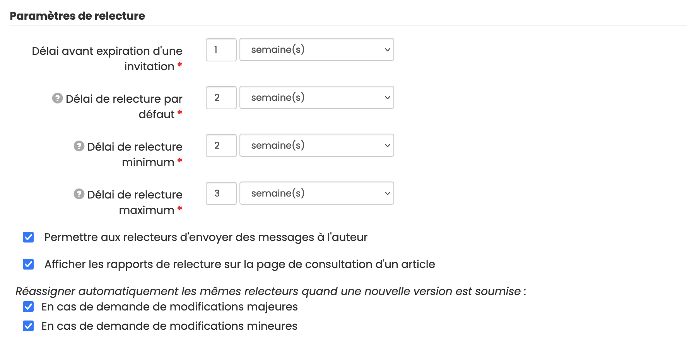
- Délai avant expiration d’une invitation* : indiquer ici un nombre de jour(s)/semaine(s)/mois
- Délai de relecture par défaut* : indiquer ici un nombre de jour(s)/semaine(s)/mois
- Délai de relecture minimum* : indiquer ici un nombre de jour(s)/semaine(s)/mois
- Délai de relecture maximum* : indiquer ici un nombre de jour(s)/semaine(s)/mois
Les relances automatiques sont calculées à partir de ces paramètres.
Autres options :
- Permettre aux relecteurs d’envoyer des messages à l’auteur
- Afficher les rapports de relecture sur la page de consultation d’un article
Réassigner automatiquement les mêmes relecteurs quand une nouvelle version est soumise :
- En cas de demande de modifications majeures
- En cas de demande de modifications mineures
Paramètres des rédacteurs
Minimum de relectures requis : indiquer ici le nombre minimum de relectures avant de pouvoir accepter un article
Autres options :
Cloisonner les rédacteurs : s’ils sont cloisonnés, les rédacteurs ne peuvent voir que les articles qui leur sont assignés
- Les rédacteurs peuvent accepter les articles
- Les rédacteurs peuvent publier les articles
- Les rédacteurs peuvent refuser les articles
- Les rédacteurs peuvent demander des modifications sur les articles
- Permettre aux rédacteurs de modifier les templates de mails
Lorsqu’un article est soumis, assigner les :
- Rédacteurs en chef
- Rédacteurs de rubrique
- Rédacteurs de volume (hors volume spécial)
- Rédacteurs suggérés par le contributeur
-
Rédacteurs de volume spécial
-
Permettre aux rédacteurs d’abandonner le processus de publication
Paramètres de notification
Permettent d’activer des envois de mails à certains rôles (administrateurs, rédacteurs en chef, secrétaires de rédaction) lorsqu’un article est soumis, mis à jour ou refusé.
Paramètres des volumes spéciaux
Permet d’attribuer un code d’accès afin de permettre la soumission dans les volumes spéciaux et également de cloisonner les relecteurs d’un volume spécial.
Préparation de copie
Permet de cloisonner les préparateurs de copie, c'est-à-dire de leur donner accès seulement aux articles qui leur sont assignés.
Conflit d’intérêts
Il est possible d’activer une option pour permettre aux rédacteurs de déclarer un conflit d’intérêts avant l’évaluation.
Article - décision finale
Permet de modifier certaines choses sur un article déjà accepté.
Lier publications / données / logiciels
Rôle : auteur
Afin de promouvoir et favoriser la reproductibilité de la science, Episciences facilite le lien entre un article et un jeu de données ou un logiciel. L’auteur ou l’autrice qui soumet un document à une revue peut ajouter l’identifiant fourni par la plateforme sur laquelle sont entreposées les données ou le logiciel, facilitant ainsi l’accès à ces ressources, à la fois aux pairs qui évaluent les soumissions, et aux lecteurs et lectrices si l’article est publié.
Cette page de documentation explique pas à pas comment lier un logiciel. La procédure est similaire pour lier un jeu de données ou une publication.
Lier un logiciel
L’ouverture des logiciels fait partie intégrante des politiques nationales et européennes de science ouverte (Passeport pour la science ouverte. Codes sources et logiciels, août 2022).
Avant de lier un logiciel à un document soumis à une revue Episciences, il est conseillé de le déposer dans HAL ou dans Software Heritage afin de permettre son archivage pérenne. Si le logiciel n’est pas disponible dans un entrepôt (github ou autre) ou si l’on souhaite disposer de métadonnées riches pour le décrire, il est possible de le déposer dans HAL. Si le logiciel est déjà disponible dans un entrepôt, il est recommandé d’utiliser Software Heritage.
Déposer le logiciel dans HAL
Le dépôt d’un logiciel via HAL permet son archivage pérenne dans Software Heritage. La procédure complète du dépôt est détaillée dans la documentation HAL, Déposer le code source d’un logiciel.
Déposer le logiciel dans Software Heritage
La procédure (en anglais) pour archiver un logiciel est disponible sur le site de Software Heritage, Save and reference research software.
Lier le logiciel à la publication sur Episciences
Après la soumission du document, vous pouvez lier un logiciel.
Pour cela, se rendre sur “Mon espace” > “Mes articles”. Cliquer sur le titre du document voulu puis, dans l’onglet “Liens publications - données - logiciels”, cliquer sur “Ajouter un logiciel”.
Sur Software Heritage, le SWHID se trouve dans l’onglet rouge “Permalinks”, situé à droite de l’écran.

Choisir le code correspondant à “Directory” (qui permettra d’afficher la prévisualisation sur l’article) puis cliquer sur “Copy identifier”.
Indiquer l’identifiant Software Heritage (SoftWare Hash IDentifier, SWHID) puis cliquer sur “Ajouter”.
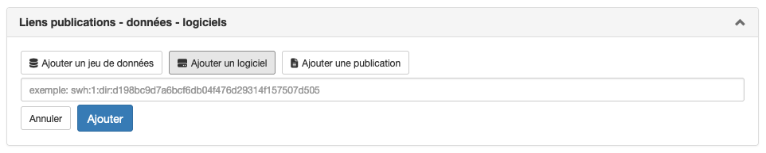
Une prévisualisation du logiciel tel qu’archivé dans Software Heritage s’affiche (sous réserve d’avoir bien choisi le code correspondant à “Directory”).

À noter : l’ajout d’un logiciel est possible à tout moment. Il sera visible par les évaluateurs et les évaluatrices qui pourront ainsi évaluer le document en ayant accès au code.
Citer un logiciel dans sa publication
Vous trouverez sur le site de Software Heritage une documentation complète (en anglais) pour citer un logiciel dans une publication : Citing software with style.
Soumettre un document
Rôle : auteur
La soumission d’un document à une revue se fait en deux étapes :
- dépôt du document (pré-print) dans une archive ouverte compatible à savoir arXiv, HAL, Zenodo, bioRxiv, medRxiv, DaRUS (University of Stuttgart), Recherche Data Gouv ;
- soumission du pré-print sur le site Episciences de la revue.
Déposer un document dans une archive ouverte
Pour vous accompagner dans le dépôt d’un document, nous avons élaboré des tutoriels vidéos (réalisation Alice Fritsch, en anglais) :
Soumettre le document sur le site de la revue
Se connecter au site
Le compte HAL est utilisé pour se connecter sur les sites des revues. En cas de premier dépôt ou si vous ne disposez pas de compte HAL, vous devez vous créer un compte.
Pour se connecter au site d’une revue, cliquer sur le bouton “Connexion” en haut à droite.
Proposer un document
Une fois connecté, cliquer sur l’onglet “Proposer un document”.

- Archive : sélectionner l’archive ouverte dans lequel se trouve l’article à soumettre à la revue ;
- Identifiant du document : indiquer l’identifiant du document sur l’archive ouverte (ex : hal-0000000 pour HAL ; 0000.0000 pour arXiv ; 10.5281/zenodo.0000000 ou 0000000 pour Zenodo) ;
- Version : préciser la version du document à soumettre.
Les métadonnées (prénoms et noms des auteurs, titre, résumé et mots-clés) sont automatiquement récupérées par le système.
Suivant les paramétrages du site, il est possible de proposer l’article pour un volume ou une rubrique dédiée, de suggérer des noms de relecteurs ou encore de joindre une lettre d’accompagnement.
Le champ libre “Commentaire” permet d’ajouter un mot à l’attention de l’équipe éditoriale de la revue (ce commentaire sera visible des rédacteurs en chefs, rédacteurs et relecteurs).
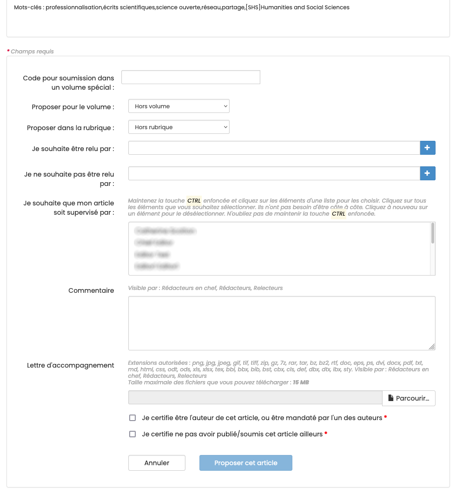
Afin de pouvoir soumettre le document, il est nécessaire de certifier :
- être l’auteur de celui-ci ou bien être mandaté par l’un des auteurs dans le cadre d’un article écrit à plusieurs ;
- ne pas avoir publié ou soumis ce document ailleurs.
Cliquer sur “Proposer cet article” pour valider le dépôt de la soumission.
Lier un jeu de données, un logiciel ou une publication
Après le dépôt du document, il est possible de lui ajouter un jeu de données, un logiciel ou une autre publication.
Pour consulter le détail de la procédure, consulter la page Lien publications / données / logiciels.
Soumettre un document dans un volume spécial
Si vous avez été invité-e à contribuer à un volume spécial, un code d’accès vous a été envoyé par mail. La procédure est la même que pour soumettre un document mais il faut au préalable saisir le code d’accès dans le champ correspondant.

Après avoir saisi le code d’accès, le volume correspondant s’affiche.
Finaliser la procédure de dépôt en cliquant sur “Proposer cet article”.
Demande de modifications
Après évaluation de son article, l’auteur peut recevoir une demande de modification de la part de la revue. Il est alors invité à retravailler son article et à soumettre une nouvelle version.
Deux possibilités de dépôt existent :
- Option 1 : dépôt de la version remaniée dans l’archive ouverte
Se connecter sur HAL et se rendre sur le dépôt initial. Cliquer sur le bouton “Déposer une nouvelle version” en bas de page.
Une fois la nouvelle version modérée, se connecter à Episciences, se rendre sur la page de l’article. Dans la partie “Demandes de modifications”, dans “Répondre à cette demande”, sélectionner “Proposer une nouvelle version”.

L’identifiant du document et le nom de l’archive sont proposés par défaut. Indiquer la nouvelle version à prendre en
compte.

La nouvelle version est transmise pour relecture.
- Option 2 : soumettre une version temporaire (la version modifiée n’est pas présente dans l’archive)
Cette option est à privilégier en cas de modifications mineures.
Se connecter à Episciences et se rendre sur la page de l’article. Dans la partie “Demandes de modifications”, dans “Répondre à cette demande”, sélectionner “Envoyer une version temporaire”.
Télécharger la version temporaire. Un commentaire peut également être ajouté pour préciser les modifications apportées à cette version. 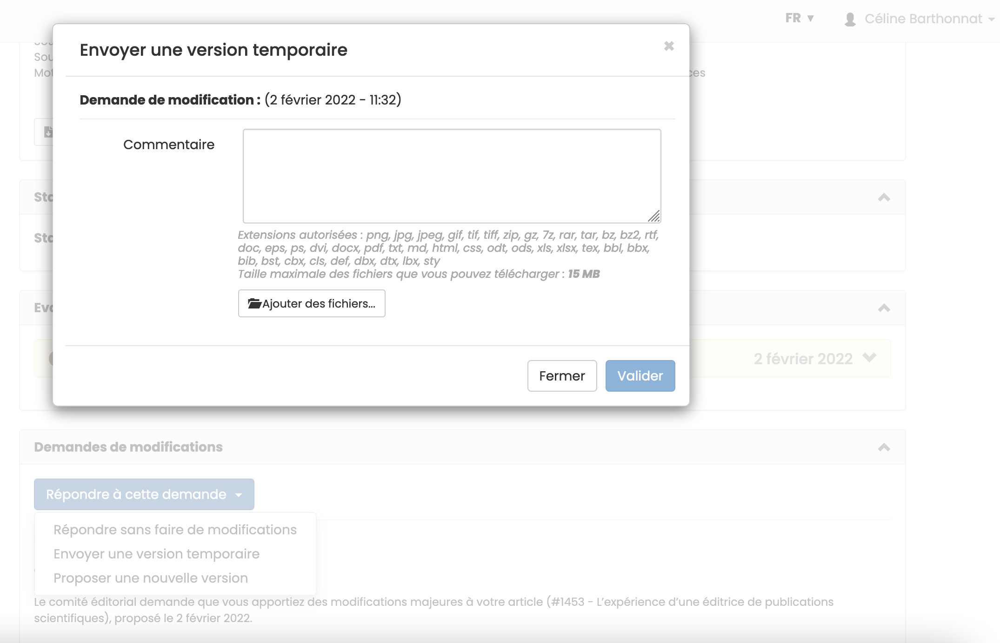
Cette version est uniquement présente sur Episciences et non visible dans l’archive ouverte. Lorsque l’article sera validé, la version finale devra être téléchargée dans l’archive afin d’obtenir le statut « accepté » (voir option 1).
L’article publié est consultable sur le site de la revue. Ses références bibliographiques sont mises à jour automatiquement dans l’archive ouverte.
En cas de besoin, vous pouvez contacter le support technique à l’adresse suivante : support [at] episciences.org
Gestion des utilisateurs
Rôles : administrateur, rédacteur en chef, secrétaire de rédaction
Pour gérer les utilisateurs de la revue (création de compte, ajout de rôles, etc.), aller dans : Gérer la revue > Utilisateurs > Liste.
Conseil
Avant de créer un compte pour un nouvel utilisateur, veuillez vérifier que celui-ci n’existe pas déjà dans la base des utilisateurs. Pour vérifier que l’utilisateur n’a pas déjà des droits dans la revue, renseignez le nom de la personne dans le champ de recherche situé en haut à droite de la liste des utilisateurs.
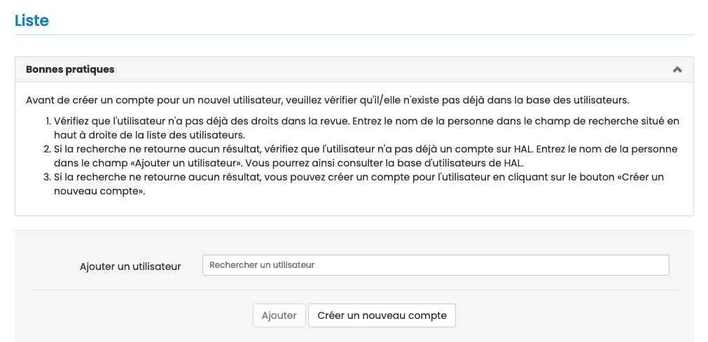 Il est possible d’inviter de nouveaux utilisateurs (auteurs, relecteurs ou rédacteurs) sur le site de la revue. Pour cela, indiquez le nom de l’utilisateur à ajouter dans le champ dédié. Si la recherche ne retourne aucun résultat, il est possible de créer un compte pour l’utilisateur en cliquant sur le bouton “Créer un nouveau compte”.

Champs obligatoires pour la création d’un compte :
- Login : au moins 3 caractères. Attention : le login ne peut pas être modifié une fois le compte créé ;
- Mot de passe : 7 caractères minimum
- Nom
- Prénom
- Courriel : indiquer ici une adresse mail valide, un courriel de confirmation sera envoyé pour valider la création du compte
Il est recommandé que les utilisateurs créent eux-mêmes leur compte (choix du login et du mot de passe). Une fois le compte créé, l’utilisateur pourra être sélectionné dans la liste.
Par défaut, tout utilisateur a le rôle de membre, ce qui lui permet de soumettre un article. D’autres rôles peuvent être ajoutés par le rédacteur en chef.
Pour ajouter un ou des rôles, se positionner dans la colonne “Rôles” puis sélectionner le ou les rôles choisis parmi ceux proposés dans la liste.
Volumes
Rôles : administrateur, rédacteur en chef, secrétaire de rédaction
Les volumes s’apparentent à des numéros de revues et permettent de rassembler des articles thématiques.
Il est possible de créer des volumes courants et des volumes spéciaux.
Volumes courants
Pour créer et gérer les volumes, aller dans : Gérer la revue > Revue > Volumes.

Plusieurs volumes peuvent être ouverts en même temps. Les auteurs peuvent soumettre à n’importe quel volume ouvert. Avant publication, le rédacteur en chef peut modifier le volume d’un article.
Un article ne peut être soumis à un volume fermé.
Après publication, un article ne peut être affecté à un autre volume.
Pour créer un volume, cliquer sur “Créer un volume”.
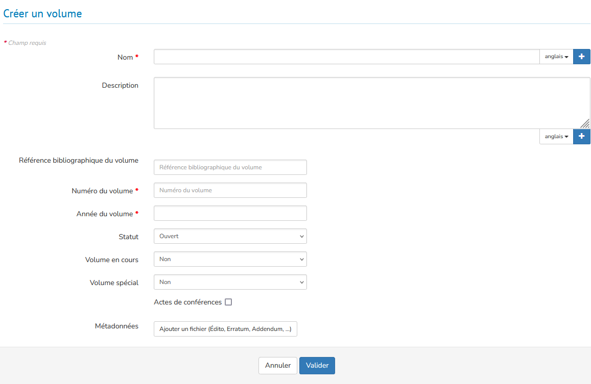
Un volume est composé de 10 éléments. Les champs marqués d’un astérisque sont obligatoires :
- Nom* : titre du volume
- Description : description du volume
- Référence bibliographique du volume : indiquer ici l’identifiant du volume (ex : 18, vol. 2, vol.24:1). Cette référence est reprise dans les templates de mail.
- Numéro du volume* : numéro de la publication (ex : 18, 24:1, XII)
- Année du volume* : année de publication du volume au format AAAA (ex : 2024)
- Statut (ouvert/fermé) : un statut ouvert permet d’ajouter des articles au fil de l’eau
- Volume en cours (oui/non) : en sélectionnant l’option “oui” et le statut “ouvert”, ce volume est proposé lors du dépôt
- Volume spécial (oui/non) : volume accessible uniquement avec un code d’accès
- Acte de conférence : voir précisions ci-dessous
- Métadonnées : permet d’ajouter un fichier PDF, comme un édito, un erratum, un addendum, des remerciements, un hommage, etc. mais également une image de couverture au format .png ou .jpg
Si le site de la revue est en plusieurs langues, le nom du volume et la description doivent être saisis pour chacune des langues. Cliquer sur + pour afficher le champ.
Actes de conférences
En cochant la case dédiée, de nouveaux paramètres s’affichent.
- Nom de la conférence* : titre de la conférence
- Thème de la conférence
- Acronyme de la conférence
- Numéro de la conférence
- Lieu de la conférence : indiquer la ville et le pays (ex : Lyon, France)
- Date de début de la conférence* : un calendrier permet de sélectionner la date au format AAAA-MM-JJ
- Date de fin de la conférence*
- DOI de l'acte de conférence
Volume spécial
Le fonctionnement d’un volume spécial est lié aux paramètres des volumes spéciaux définis dans la rubrique Revue > Paramètres > Paramètres des volumes spéciaux :
- Protéger la soumission dans les volumes spéciaux par un code d’accès : si l’item est coché, un code d’accès est associé au volume. Ce code est envoyé aux contributeurs pour les inviter à soumettre un article dans le volume spécial.
- Cloisonner les relecteurs : si l’item est coché, les relecteurs d’un volume ne seront pas visibles ailleurs dans la revue. Un relecteur cloisonné est un relecteur autorisé à relire uniquement les articles destinés au volume spécial. Il ne voit alors que les articles fléchés vers le volume spécial et pas les autres articles de la revue.
- Les rédacteurs peuvent réattribuer la gestion de l’article : un rédacteur, à qui le rédacteur en chef a attribué la gestion d’un article, peut désigner d’autres rédacteurs.
Pour créer un volume spécial, aller dans : Gérer la revue > Revue > Volumes puis “Créer un volume”.
Renseigner les éléments et sélectionner “Oui” pour “Volume spécial”.

Si dans Revue > Paramètres > Paramètres des volumes spéciaux, vous avez sélectionné l’item “Protéger la soumission dans les volumes spéciaux par un code d’accès”, le code s’affiche dans la liste des volumes.

Ce code est envoyé aux contributeurs pour les inviter à soumettre un article dans le volume spécial.
Gérer le site
Rôles : administrateur, rédacteur en chef, secrétaire de rédaction, webmaster
L’apparence du site web peut être personnalisée pour donner une identité visuelle spécifique à la revue.
Pour personnaliser la revue, aller dans : Gérer la revue > Site web.
Six options paramétrables sont proposées :
- Général : définir les langues de l’interface ;
- Style : définir les options d’affichage du site ;
- En-tête : ajouter un bandeau ;
- Menu : créer et gérer les pages d’information (charte éthique, fonctionnement de la revue, processus d’évaluation, crédits, etc.) ;
- Actualités : ajouter des informations ponctuelles (appels à contribution, annonce de colloque, recensions de la revue, etc.) ;
- Ressources : stockage des différents fichiers textes et images du site (ex : logos, bandeau, contrat de cession de droits d’auteur, etc.)
Général
L’option “Général” permet de définir les langues de l’interface. Actuellement, il existe deux choix possibles : français et anglais.
Sélectionnez les langues souhaitées en cliquant sur leur intitulé (cliquez et appuyez sur Ctrl ou Cmd pour sélectionner la seconde langue, si votre site est bilingue).
Cliquez sur “Enregistrer” pour sauvegarder le paramétrage choisi.
À noter : si vous choisissez d’implémenter les deux langues, il conviendra de traduire toute l’interface dans ces deux langues (titres et contenus des pages créées par vos soins).
Style
L’option “Style” permet de définir l’affichage du site. Vous pouvez choisir :
- l’orientation du menu (horizontal ou vertical) ;
- la largeur de la zone principale ;
- l’affichage ou non du fil d’ariane ;
- le type de personnalisation (en 1 clic, simple ou avancé).
Orientation du menu
Vous pouvez choisir entre un menu vertical (qui s’affiche à gauche de la page) ou horizontal (qui s’affiche en haut de la page, sous le bandeau de titre). Vous pouvez également choisir l’option “accordéon” pour chacune de ces deux orientations.
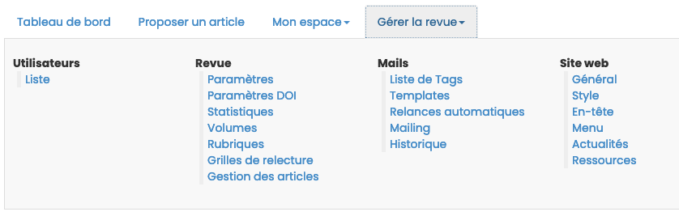
Largeur de la zone principale
Deux possibilités sont proposées ici :
- Par défaut (fixe 940px) ;
- Fluide (dépend de l’écran).
Afficher le fil d’ariane
L’affichage du fil d’ariane permet de savoir à tout moment dans quelle page du site on se trouve.
Le fil d’ariane s’affiche en haut de page soit directement sous le bandeau (dans le cas d’un menu vertical), soit sous le menu (dans le cas d’un menu horizontal).

Type de personnalisation
Il existe trois possibilités pour personnaliser votre site : en 1 clic, simple ou avancé.
En sélectionnant l’option “En 1 clic”, vous aurez le choix entre deux modèles prédéfinis (modèle 1 et modèle 2).

En sélectionnant l’option “Simple”, vous pouvez configurer les couleurs d’arrière-plan de la page, celle de la zone principale, du texte et des liens, choisir la police et la taille du texte, des titres, etc. 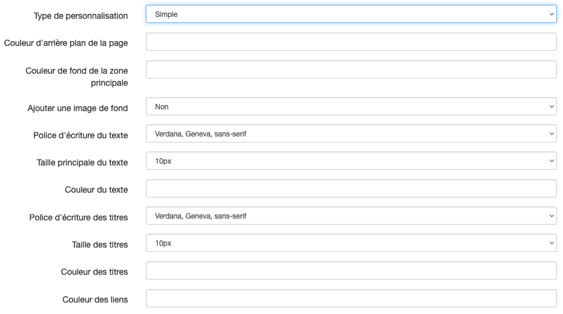
En sélectionnant l’option “Avancé”, vous pouvez directement éditer la feuille de style CSS.
Vous pouvez faire appel à l’équipe Episciences pour être accompagné dans le choix des polices et des couleurs, afin de permettre l’accessibilité de votre site.
En-tête
L’option “En-tête” permet de personnaliser le bandeau. Vous pouvez déposer ici les fichiers (images, logos, etc.) qui apparaîtront dans l’en-tête du site.
Cliquez sur le bouton "Ajouter un logo”. Si vous souhaitez saisir un texte dans l’en-tête, sélectionnez “Texte” dans le menu déroulant du champ “Type”. Saisissez le titre de votre revue et son alignement (gauche, centré ou droite). Si votre site est bilingue, pensez à préciser le titre dans les deux langues.
Si vous avez choisi la personnalisation avancée, vous pouvez ajouter un style en précisant les classes et styles CSS à attribuer au titre.

Si vous souhaitez ajouter une image, sélectionnez “Image” dans le menu déroulant du champ “Type” et téléchargez le fichier après l’avoir sélectionné avec “Parcourir”.

Cliquez sur “Enregistrer” pour sauvegarder le paramétrage.
Menu
L’option “Menu” permet de créer et gérer les pages du site, notamment les pages d’information.
Il y a neuf types de pages :
- Page d’accueil : une page unique, Une du site ;
- Page personnalisable : pour créer des pages d’information (charte éthique, fonctionnement de la revue, processus d’évaluation, crédits, etc.) ;
- Lien : permet de créer un lien vers une page extérieure (ex : le site de l’éditeur, la documentation Episciences, etc.) ;
- Fichier : permet d’afficher un document dans le navigateur ou de le relier à une page ;
- Actualités : permet d’ajouter des informations ponctuelles ;
- Flux RSS : permet d’obtenir le flux des derniers articles publiés (papers.rss) ;
- Pages de consultation par auteur, par date, par rubrique, par volumes, par derniers articles publiés, etc.
- Rechercher un article : formulaire de recherche d’un article sur le site ;
- Membres du comité éditorial : page qui génère automatiquement la liste des membres suivant leur rôle dans le site.
Créer une page
Pour créer une page, sélectionnez son type dans le menu déroulant puis cliquez sur le bouton “Ajouter la page”.
Donnez un titre court à votre page : celui-ci fera office de permalien (lien permanent) et apparaîtra dans l’URL.
Si votre site est bilingue, pensez à préciser le titre de la page dans les deux langues.

Si vous saisissez “contact” dans le champ “Lien permanent”, le nom de la page sera : nomdelarevue.episciences.org/contact
Vous pouvez décider de définir si les pages sont publiques, privées (réservées aux membres) ou uniquement visibles par certains rôles (personnalisée).
Créer un dossier
Il est possible de créer des dossiers afin de regrouper plusieurs pages. Pour créer un dossier, cliquez sur “Ajouter un dossier”.

Si votre site est bilingue, pensez à préciser le titre du dossier dans les deux langues.
Exemple de menu dont les différentes pages ont été organisées en dossiers : “La revue” pour les pages présentant le fonctionnement de la publication (Ligne éditoriale, Comités, Charte de fonctionnement, Processus d’évaluation), “Contribuer” pour les pages destinées aux auteurs qui souhaitent publier dans la revue (Charte éthique, Modalités de soumission, Recommandations aux auteurs) et “Informations” pour les pages de présentation générale de la revue (Appels à contribution, Politiques de publication).
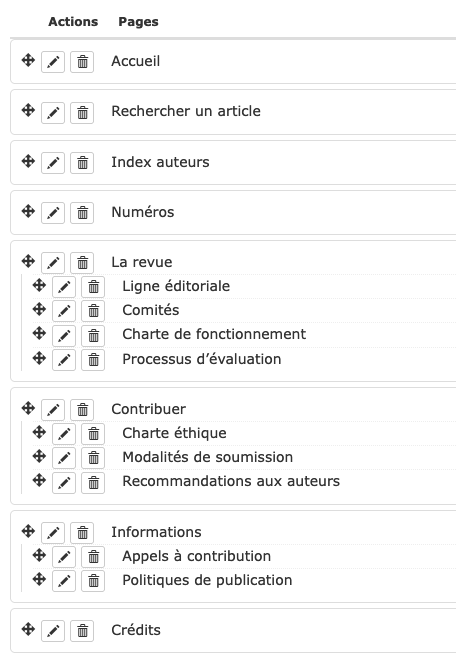
Éditer une page
Pour ajouter ou modifier du contenu sur une page, aller sur la page et cliquer sur “Modifier le contenu de la page”.
Actualités
L’option “Actualités” permet d’ajouter des informations sur la page dédiée aux actualités. Celle-ci doit avoir été créée au préalable dans le menu.
Pour ajouter une actualité, cliquer sur le bouton “Ajouter une actualité”.

Le formulaire de saisie d’une nouvelle actualité comporte quatre champs. Les champs marqués d’un astérisque sont obligatoires.
- Titre* : titre de votre actualité
- Contenu : description de l’actualité
- Lien : url de la page permettant d’avoir davantage d’informations
- État : invisible / en ligne. Le statut invisible pour permet de désafficher l’actualité sans toutefois la supprimer (pour la conserver en archives par exemple).
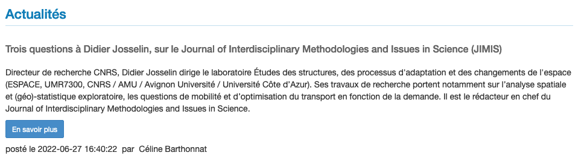
Ressources
L’option “Ressources” liste l’ensemble des ressources (fichiers textes, images, etc.) déposées sur le site.